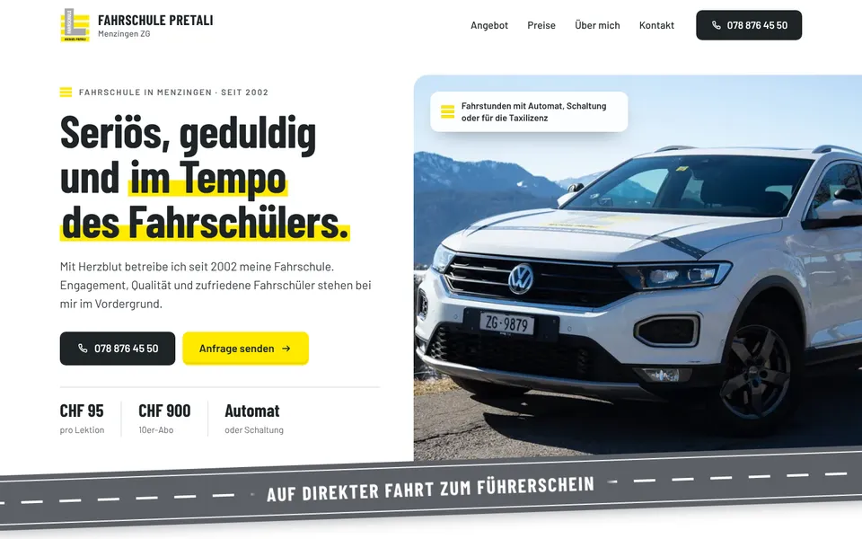
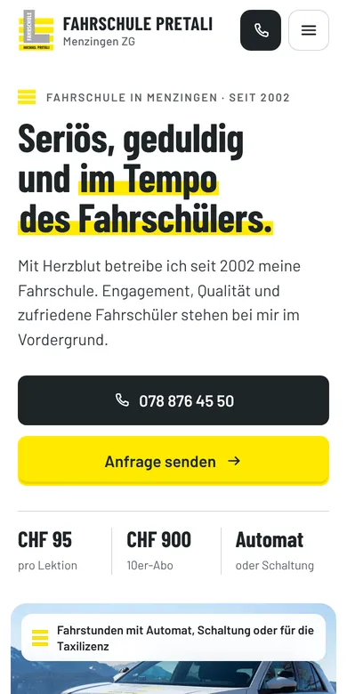

Design A
Strassenband
Hell und klar: Das graue Strassenband mit der weissen Mittellinie von Ihren Fahrschulautos trägt Ihr Motto «Auf direkter Fahrt zum Führerschein» quer durch die Seite, im ersten Bild steht der weisse T-Roc vor den Bergen. Gelb erscheint nur als Fläche, etwa auf der Karte mit Ihren Preisen, damit alles gut lesbar bleibt.
- Hell und klar
- Strassenband mit Motto
- Weisser T-Roc